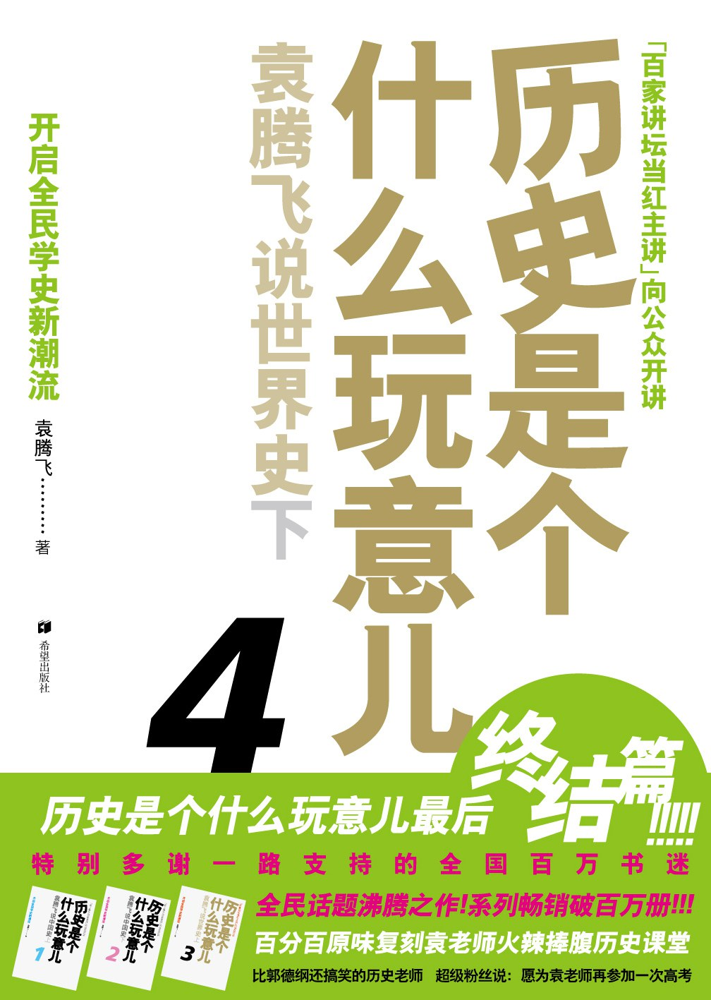

《历史是个什么玩意儿4》

总体观点
近代西方崛起的底层密码在于制度创新先于技术与军力爆发：英国之所以率先成为日不落帝国，关键在于1688年光荣革命确立了君主立宪制与产权保护，使资本与科技发明获得了无后顾之忧的孵化温床。
意识形态狂热往往带来生灵涂炭的灾难性代价：从法国大革命雅各宾派专政的断头台恐怖，到希特勒纳粹轴心国挑起的种族灭绝浩劫，警示人类理性一旦被狂热极端思潮绑架，文明将迅速坠入野蛮深渊。
全球化体系的建立伴随着血与火的洗礼与大国博弈：两次世界大战彻底击垮了旧欧洲殖民体系，雅尔塔冷战格局与战后国际金融法治秩序的建立，奠定了当代全球治理的底层框架。
核心观点
-
1. 英国光荣革命的智慧：不流血的妥协孕育现代宪政
没有经过流血清算，而是通过议会与王室签署《权利法案》达成权力制衡；虚君统治与议会主权的确立，避免了国家陷入动荡内耗。
袁腾飞幽默点评：‘国王在议会，首相在白厅，国王统而不治专心当国家吉祥物，天下大事全由老百姓选出的议员说了算。’ -
2. 法国大革命的双刃剑：自由与断头台的狂暴二重奏
《人权宣言》点燃了欧洲平等自由的火炬，但雅各宾派狂热的平民民粹专政将自由异化为肆意处决政敌的血腥狂欢，最终呼唤出拿破仑军事独裁。
生动描述罗伯斯庇尔今天将别人送上断头台，明天自己被政敌推上同一座断头台的历史宿命戏剧。 -
3. 美国南北战争的宪政本质：联邦统一与工业资本主义胜利
南北内战表面上是废奴与蓄奴之争，内核是北方先进工业自由雇佣劳动制与南方落后种植园奴隶主经济模式在关税与联邦权力上的生死决战。
林肯签署《解放黑人奴隶宣言》，不仅在道德上抢占了制高点，更让南方数十万黑人奴隶反水投奔北军，彻底扭转了战场天平。 -
4. 一战绞肉机的技术反噬：工业化流水线杀戮的开端
马克沁重机枪、铁丝网、毒气弹与坦克的全面列装，打破了欧洲贵族骑士战争的浪漫幻想，将索姆河与凡尔登演变为数百万年轻生命的工业粉碎机。
讲述索姆河战役第一天英军在重机枪扫射下死伤六万人，战后整整一代欧洲青年在战壕泥泞中陷入集体虚无。 -
5. 二战历史的终极警示：绥靖政策是喂饱恶狼的致命毒药
英法张伯伦政府在慕尼黑协定中割让苏台德区企图祸水东引，不仅没有换来‘一代人的和平’，反而刺激了法西斯德国吞并欧洲的狂妄胃口。
丘吉尔一针见血怒斥绥靖政策：‘在战争与耻辱面前你选择了耻辱，但耻辱过后你依然要面对战争！’
全书结构
-
第一章：大宪章与光荣革命（英国从内战走向君主立宪）
梳理斯图亚特王朝专制倒行逆施、查理一世被斩首、克伦威尔护国政体，直至1688年光荣革命与《权利法案》确立现代议会政治。
详解英国国王为何连‘风能进雨能进国王不能进’的破草屋都不敢擅自查抄，阐释私有财产神圣不可侵犯的宪政根基。 -
第二章：自由火炬与断头台（北美独立与法国大革命风云）
对比英美法三场资产阶级革命；解析波士顿倾茶事件、《独立宣言》起草，以及攻占巴士底狱、雅各宾恐怖与拿破仑横扫欧陆的兴亡。
精彩复盘滑铁卢战役中内伊元帅的盲目骑兵冲锋与格鲁希元帅的犹豫迟到，分析拿破仑百日王朝的宿命崩塌。 -
第三章：蒸汽机与铁血扩张（工业革命与大国崛起洗牌）
瓦特改良蒸汽机点燃工业动力；梳理美国南北战争、俄国1861年农奴制废除与日本明治维新‘脱亚入欧’的大国现代化竞逐之路。
讲述日本黑船事件后明治天皇带头捐款买巡洋舰、岩仓使节团考察欧美的奋发图强，对比晚清洋务运动的制度瘸腿。 -
第四章：帝国黄昏与凡尔赛分赃（第一次世界大战与魏玛危机）
巴尔干火药桶被引爆；全景呈现同盟国与协约国在西线东线的堑壕僵局，以及巴黎和会十四点原则破产带来的下一场大战隐患。
法国元帅福煦在签署凡尔赛和约时惊人预言：‘这不是和平，这不过是二十年的休战！’ -
第五章：正义审判与冷战破晓（第二次世界大战全景与格局重塑）
闪电战席卷欧洲、珍珠港事件美军参战、斯大林格勒保卫战逆转局势，直至诺曼底登陆与纽伦堡审判，勾勒战后雅尔塔世界体系。
还原丘吉尔在敦刻尔克大撤退后在下议院发表‘我们将在海滩战斗、我们决不投降’的传世演说，鼓舞自由世界反法西斯士气。